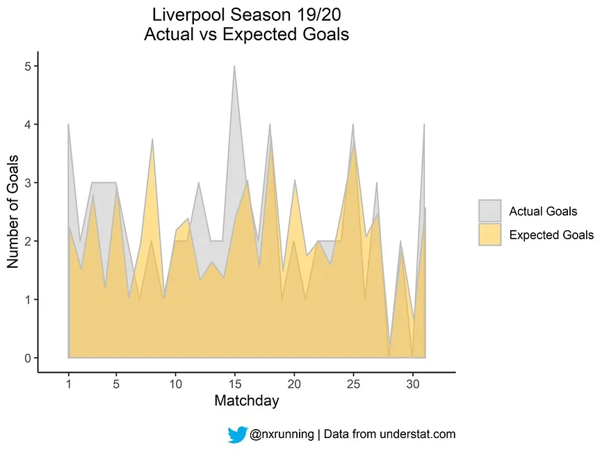
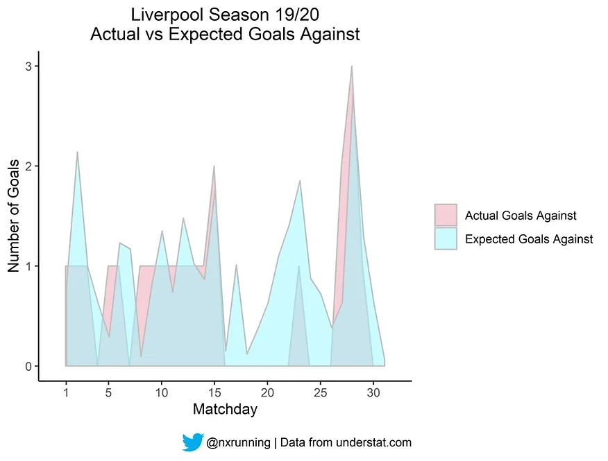
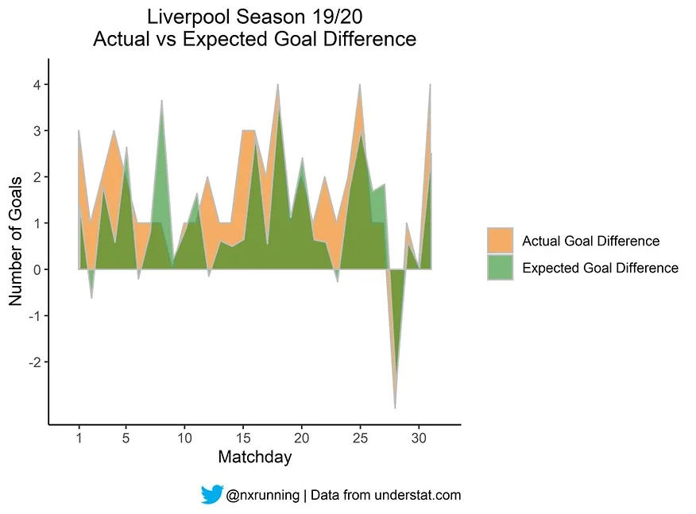

Liverpool’s success: Lucky or worthy winners?
Liverpool was announced the champions of English Premier League (EPL) season 19/20 with a record of seven games remaining. 23 points separate them from second-placed Manchester City. This post examines whether such overwhelming dominance over their rivals is attributed to sheer luck or genuine strength of the team through visualisation of expected goal data.

Football results do not necessarily reflect the performance of respective teams accurately. It is not always the case that the winning team has higher number of goal-scoring opportunities or greater possession than their opposition. Sometimes, teams walk away with a result merely due to good fortune. How do we differentiate between luck and performance?
Expected Goals
Evaluation of a team’s underlying performance at goal is made possible with the expected goals (xG) metric. The metric defines the probability of a shot being scored based on multiple factors such as angle, distance and type of assist. This is well-explained with various examples in the video link here by Opta, a football data analytics company. Such measure provides us with further insights beyond the match statistics that are typically shown.
Football history has demonstrated that goals could be scored by players of different positions, including the goalkeeper. Some came from clear goal-scoring chances, while some were scored from very unexpected situations. For example, Asmir Begovic, goalkeeper of Stoke City, scored from his own penalty box in 2013. The xG metric would have informed us that the attempt had very low odds of hitting the back of the net. It is reasonable to consider that such abnormal and unexpected goals were just teams being lucky.
Theoretically, the team with better goal-scoring opportunities should register more goals. However, this is not the case in reality due to various factors and interaction effects in a football game. Therefore, comparison between expected and actual goals could help us differentiate chance occurrences and deserving performances. Scoring much more actual than expected goals would suggest a lucky outing for the team.
xG is not commonly reported because such information is not readily available online, as the probabilities are computed based on trained models using historical data. Some sites charge fees for these data. Fortunately, Understat.com provides free access to xG statistics based on their algorithms. Data was scraped using BeautifulSoup package in python to examine whether Liverpool’s impressive season so far (31 fixtures) was a fluke or genuine prowess. You may find the web scraping code template on my github here.
 The area plot above illustrates the comparison between actual and expected goals for Liverpool this season so far. The first important point is observing how xG approximates actual goals closely most of the time, which highlights the predictive value of the metric. Another interpretation of the plot is that Liverpool was expected to score at least one goal in most matches (29 to be precise). This is not surprising given that they are second in the league’s goal rankings. This suggests that Liverpool was quite consistent in producing goal-scoring opportunities.
The visible grey areas indicate that Liverpool registered more actual goals than expected in some occasions. While the disparity between the two areas is mostly quite small, such differences suggest that Liverpool had luck on their side on top of their performances. The most notable gap was on matchday 15, whereby Liverpool faced Everton in the Merseyside derby. Liverpool scored 5 goals, twice the xG statistic of 2.41. Aggregation of xG revealed that Liverpool was expected to score 64.25 goals, which is less than the 70 goals they actually scored.

Similarly, we could use the opposition’s xG metric to assess how lucky Liverpool was defensively. The figure above illustrates the comparison between actual and expected goals against. The visible blue areas indicate that Liverpool conceded less actual goals than expected, implying good fortune in these occasions. However, the visible red areas suggest that Liverpool was also unlucky during some fixtures as well. Aggregation of expected goals against revealed that Liverpool was expected to concede a total of 29.38 goals over 31 matches so far. In reality, Liverpool had the best defensive record in the league with a total of 21 conceded. Once again, the difference between the two measures suggests that luck was in Liverpool’s favour as well from the defensive perspective.

Expected Goal Difference
Subtracting the expected goals against from xG would compute the expected goal difference for a given fixture. The visualisation above presents the actual versus expected goal difference (xDiff) for all the fixtures. A positive xDiff indicates that the team should win the game, while negative xDiff indicates an expected loss, and zero implies an expected draw. This can inform us whether the team was deserving of its result.
According to the figure above, we could clearly see that Liverpool had a deserving loss on matchday 28. Liverpool lost convincingly to Watford by three goals. In that fixture, Liverpool registered their lowest xG of 0.21 and the highest expected goal against of 2.71. These statistics clearly showed that Liverpool had a very poor performance.
We could also use threshold values of +0.5 and -0.5 to determine whether Liverpool was anticipated to win and lose the game respectively based on their performance. The data revealed that 24 out of 31 games had an xDiff greater than 0.5, and only 2 out of 31 games had an xDiff less than -0.5. Such statistics strongly support Liverpool’s consistency in their performance throughout the season. In reality, Liverpool won a total of 28 games and lost 1 single game.
Conclusion
In summary, xG is a valuable metric to assess the underlying performance of a team beyond the results. As the saying goes, better to be lucky than good. Indeed, the data revealed that Liverpool was lucky both offensively and defensively during certain occasions, albeit usually by small margins. However, saying that Liverpool’s success was a lucky win based on these results will be a complete misinterpretation. The xDiff data clearly shows that Liverpool exhibited strong performance consistently throughout the season and deserved their results. Therefore, a fair conclusion will be that Liverpool’s title winning success was largely attributed to their consistent strong performance, but they also had some luck on their side as well.